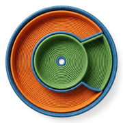

Your digital junk drawer for iPhone. Save anything, find it later, and use it.
Text, links, photos, files, PDFs, recordings. Anything that has no better home.
Everything is a square with a real preview, so you recognise it instead of reading filenames.
Text pulled out of screenshots, scans, PDFs, ebooks, documents and recordings, so search finds what is inside them.
Add a pass to Wallet, a number to Contacts, a date to Calendar, or a reminder that brings you back to it.
Nothing is saved unless you choose it. Catchall never watches your clipboard.
Free, and you can keep as much as you like. One payment shows it all at once.
Questions, feedback, or something broken? Reach out anytime.
copycopyapp@gmail.comLast updated: August 2026
Catchall stores everything you save locally on your device. Your items, images, and files remain on your device and are never transmitted to us or to any third party.
We do not collect, access, or receive any of your data. There are no accounts, no servers, and no sign-in. The developer cannot see what you store.
Catchall saves nothing on its own. It does not monitor your clipboard or your screen. Every item in the app is there because you shared it, pasted it, or added it deliberately.
To make what you save searchable, Catchall extracts text from it: recognising text in images and scanned PDFs, reading the contents of PDFs, ebooks and documents, and transcribing recordings. All of this happens on your device. Your content is not uploaded for processing.
Transcription uses Apple's on-device speech recognition, with network recognition explicitly disabled. Your recordings are never sent anywhere. The first time transcription runs, iOS may download a language model from Apple; that download requests a model and sends none of your content.
Data only leaves the app when you take an action: copying to the clipboard, opening a link, calling a number, adding something to Wallet, Contacts, Calendar or Reminders, or using the system share sheet. These actions use standard iOS features and go directly to the destination — Catchall never intercepts or logs this activity.
Catchall asks for a permission only at the moment you use the feature that needs it, and asks for the least it can. Contacts, Calendar and Reminders are used to add what you saved; Catchall never reads your existing contacts, events or reminders. Calendar access is write-only. The camera is used only when you take a photo or scan text.
Backups are encrypted on your device before they are written, and you choose where they go. If you choose a folder inside iCloud Drive or another cloud service, the encrypted backup is stored there by that service under your own account. Choosing a location on your iPhone keeps it entirely local.
When enabled, Catchall indexes your items for Spotlight search. This index is stored locally by iOS and is not shared with Apple or any third party.
Catchall contains no analytics, tracking, advertising, or crash reporting code, and no third-party SDKs. We have zero visibility into how you use the app or what you keep in it.
Purchases are processed entirely by Apple through the App Store. We do not receive or have access to your payment information.
You have full control over your data. Delete individual items anytime, or clear everything at once. Deleted items move to Trash and are permanently erased after 30 days, or immediately when you empty the Trash. Uninstalling the app removes all data.
Nothing you put in Catchall is ever sent to us or anyone else. There are no servers, no accounts, and no cloud sync outside your control. Your drawer is yours alone.